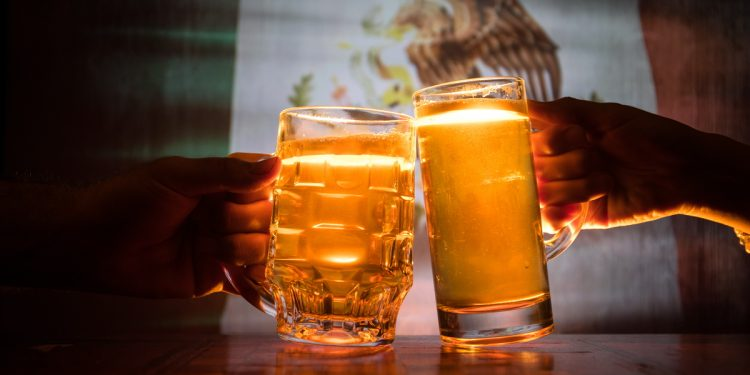

Nuestro pais Mexico es un pais que cuenta con un gran potencial gastronomicamente hablando ya
que la localizacion en nuestro
planeta le permite gozar de una amplia variedad de ingredientes que cuando se procesan de
manera adecuada dan paso a
nuestros platillos que son reconocidos a nivel mundial por su gran sabor distintivo de otros
y sobretodo por la cultura que
estos cuentan en el momento que entran los deliciosos sabores mexicanos a tu paladar.
Desarrollo
Lo que compartiremos en este blog pricipalmente van a hacer diferentes aspectos de la
gastronomia mexicana en la ciudad de mexico (CDMX)
como por ejemplo: Su histroia, Su cambio a travez de los años, Sus costumbres, etc.
Compartiremos metodos o artefactos
de innovacion que han brindado diferentes personas o grupos de personas a la cocina mexicana
enriqueciendo esta misma.
Tambien abordaremos el tema de el reconocimiento internacional de la cocina mexicana por su
aportacion a la gastronomia
mundial. Se investigara cuales son los pricipales alimentos que se ocupan mas comunmente en
la cocina para la
preparacion de los aliemntos y como se procesan para poder finalmente llegar a nuestros
platillos. Y por ultimo veremos
como la gastronomia mexicana aporta a la a economia nacional.
Motivcion
La razon por la cual decidi hablar sobre este tema es por que para mi gusto la gatsronomia
mexicana en muchas ocaciones por
nosotros los mismos mexicanos no le damos la importancia que esta debe de tener ya que es
algo que nos representa internacionalmente
y algunos ni si quiera tenemos idea de lo importante que es esta para nuestro pais. Y la
otra razon es por que una de mis cosas favoritas
en este mundo es comer.
Comida callejera en la CDMX
26/11/21
Hoy hablaremos un poco de la comida callejera en la CDMX. La comida callejera juega un papel
importante
en la sociedad ya que para la mayoria de los habitantes son de facil acceso y de hecho muy
ricas pero sobre
todo la comida callejera es barata, por lo que muchos acudimos a ella ya sea por necesidad o
simplemente por gusto.
Si bien la comida callejera es muy rica tambien es dañina para la salud y como sabemos
Mexico ocupa uno de los primeros
lugares de obesidad mundiar por esta misma razon no recomendamos comer muy seguido la comida
callejera, esta bien una
o dos veces por semana pero siempre trata de balancear tu alimentacion para tener una muy
buena salud y ahora mas ya que
estamos en tiempos de pandemia.
A continuacion les mostraremos una lista de alimentos callejeros mas consumidos pero sobre
todo mas ricos de la CDMX
Tlacoyos
Quesadillas
Sopes
Huaraches
Tacos de canasta
Flautas
Caldo de gallina
Elotes y Esquites
Gorditas
Tacos
Paginas que te proporcionaran mas información
26/11/21
En esta seccion les proporcionaremos unos links en los vas a poder encontrar mas informacion
acerca de la
comida callejera
Como puedes ver en el video la comida mexicana es un gran aporte a todo el mundo ya que contamos
con una
gran variedad de alimentos en los cuales nos podemos basar para realizar muchos otros platillos
que son
muchas veces la base de muchos mexicanos y mexicanas dia a dia.
En mi opinion Mexico es una gran potencia economica no solo por la variedad de productos si no
tambien por la
gran imaginacion que han tenido muchos mexicanos a lo largo de muchisimos años lo cual nos lleva
a la comida que
hoy consumimos dia a dia y que el mundo necesita conocer para acceder a nuestra maravillosa
cultura.
Investigacion
Camino a ser buen chef
Como ya lo mencionamos mexico cuneta con una variedad de platillos impresionantes y unas de
las
cocinas mas reconocidas a nivel interncional por lo que es una fuente de empleo muy grande
en
nuestro pais y por consecuente se generan las ganas y el amor a la cocina desde que somos
niños
y no
me dejaran mentir pero al menos uno de nosotros que esta leyendoeste blog alguna vez de niño
quizo
ser chef.
Pero la pregunta es: ¿Que tan facil es ser chef?
Priemro que nada y lo mas fundamnetal en la vida es estudiar y prepararte en el mundo laboral
de
la
gastronomia la cual no es nada facil ya que con base a un estudio realizado por La
Universidad
Autonoma de Hidalgo unicamente el 64% de los egresados cuentan con un empleo y el
36%
esta
desempleado, les proporcionaremos una estadistica grafica breve para expresar estos numeros.
Grafica de los egresados que poseen trabajo:
Grafica de los egresados que estan desempelados:
Como ya vimos un poco mas de un tercio de los egresados no cuntan con empleo ya que el mundo
laboral
es muy peleado y mexico cuenta con mas egresados que fuentes de trabajo gastronnomicas.
Tipos de gatsronomia
La gastronomia segun Jean Anthelme Brillat-Savarin un reconocido autorla
gastronomia
es el conocimiento de todo lo respectivo a la alimentación
Los tipos de gastronomia son con base a tu educacion alimenticia que puede jugar un factor
importante desde la etapa de tu niñez pero sobretodo tambien de tus preferencias por ciertos
alimentos especificos.
Es muy cierto y bien sabido que algunos tipos de gastronomia son mas saludables que otros
tambien
por
el tipo de alimentos e ingredientes que llevan cada platillo especifico por lo que tienes
que
ser
conciente y tener una dieta balanceada
Los tipos de gatsronomia son las siguientes
Gastronomia Nacional
Gastronomia International
Gastronomia Gourmet
Gastronomia Vegetariana
Gastronomia Vegana
Gastronomia Sostenible
Gastronomia Cientifica
Gastronomia Macrobiotica
Mexico y su aportacion grastonomica Internationalmente
¿Ustedes sabian que mexico es uno de los principales exportadores alimenticios del
mundo?
Probablemnete no y esta bien no muchos lo saben pero es asi mexico es un pais que aporta
demaciado a
la gastronomia mundial con diferentes ingredinetes o alimentos exportados como el aguacate,
la
cerveza, el tomate, carne e incluso el tequila, si ese con el que tu tio el mala copa se
desconecta
:).
Todo esto es posible gracias a nuestra posicion geografica en el mundo pero tambien a los
conocimientos y avances tecnologicos que tenemos desde tiempos ansestrales ya que nuestra
posicion
geografica nos permite tener varios tipos de clima y por lo tanto tambien varios ecosistemas
que
permiten florecer muchos ingredientes y por ultimo y no menos importante la colaboracion de
nuetsros
conocimienos modernos con los principios gastronomicos que tenian nuestros ansestros.
Bebidas alcholicas Mexicanas
Mexico ademas de cintar con una gran variedad de comida reconocida internacionalmente tambien
cuenta con bastante variedad de bebidas en las cules se destacan tambein las bebidas alcholicas
que para muchos son parye de su alimentacion si bien no diaria pero si cotidiana. Tambien mexico
es uno de los principales paises exportadores de bebidas alcholicas las cuales se distinguen por
el intenso sabor de esta y por que en ellas tambien se encuentran plasmadas los exquisitos
ingredientes mexicanos con los que son elaborados. Algunas de las bebidas alcholicas mexicanas
son:
Tequila
Es unna de las bebidas alcohólicas mejor manufacturadas del mundo, el tequila posee un proceso
de elaboración muy interesante como su sabor. Jalisco es la cuna de la bebida mexicana más
famosa del mundo, es por eso que aquí mismo se encuentra la Ruta del tequila.
Esta bebida se obtiene de la fermentación con levadura y destilación de los jugos del agave
azul, las cuales deben tener entre seis y diez años de maduración, después de todo el proceso,
el tequila es depositado en barriles de madera.
Mezcal
El mezcal es una bebida tradicional oaxaqueña, que viene de la planta de agave la cual se coce
por dentro a grandes temperaturas y de ahi se obtiene el liquido de el mezcal, un dato curioso
es que el mezcal tambien tien usos medicinales y se recomienda tomarlo de poco en poco y
acompañado con algo dulce.
Pulque
El pulque es una bebida originari principalmente del estado de hidalgo con la fermentación del
corazón de maguey o aguamiel mediante el proceso conocido como raspado, el cual es realizado por
un tlachiquero. Cuando el maguey llega a cierta edad, se le extrae el centro y se raspa para que
suelte el jugo, mismo que se fermenta en 24 horas.

Cálices mexicanos Emiliano Martinez Martinez, 23 de enero de 2022
 Comida callejera en la CDMX
Comida callejera en la CDMX